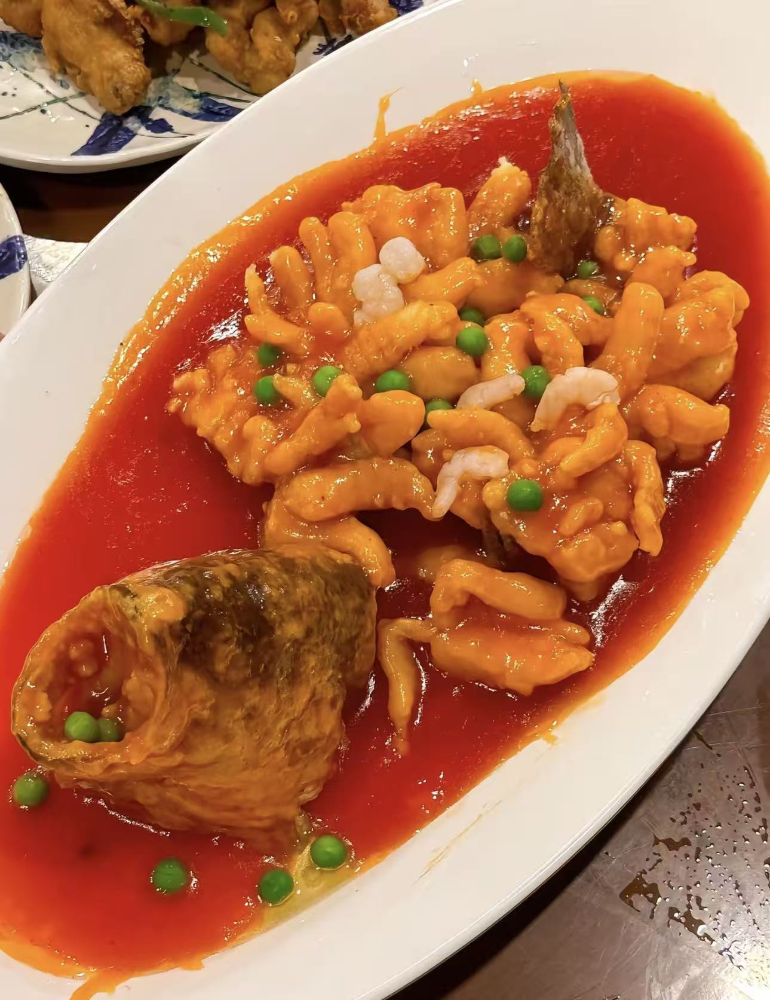
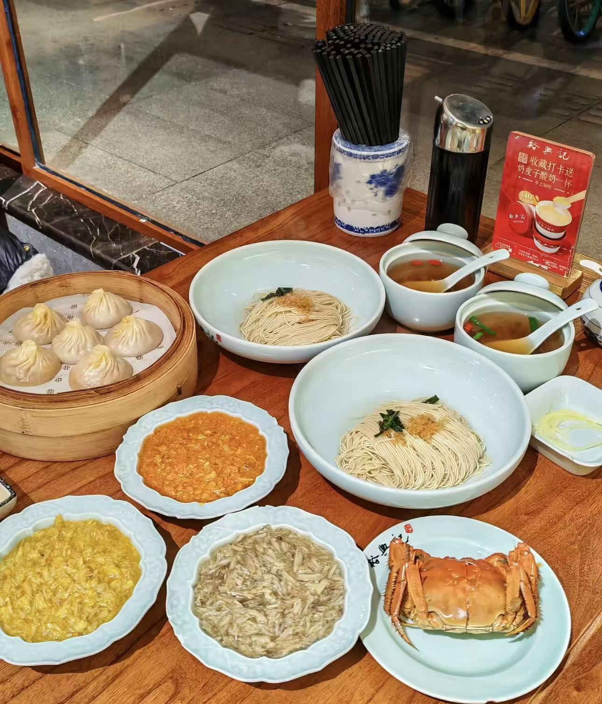
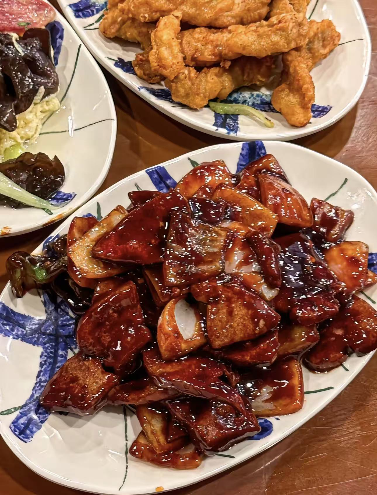
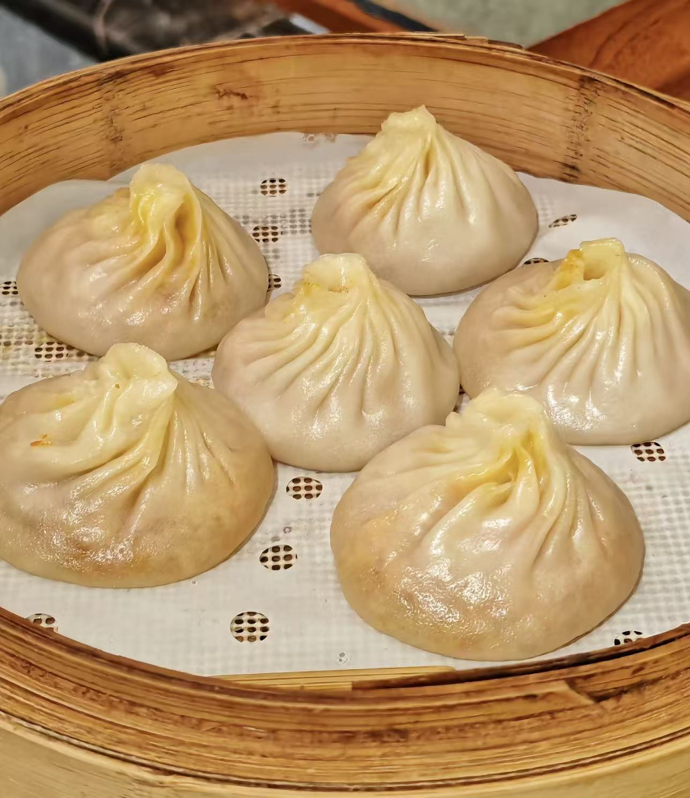
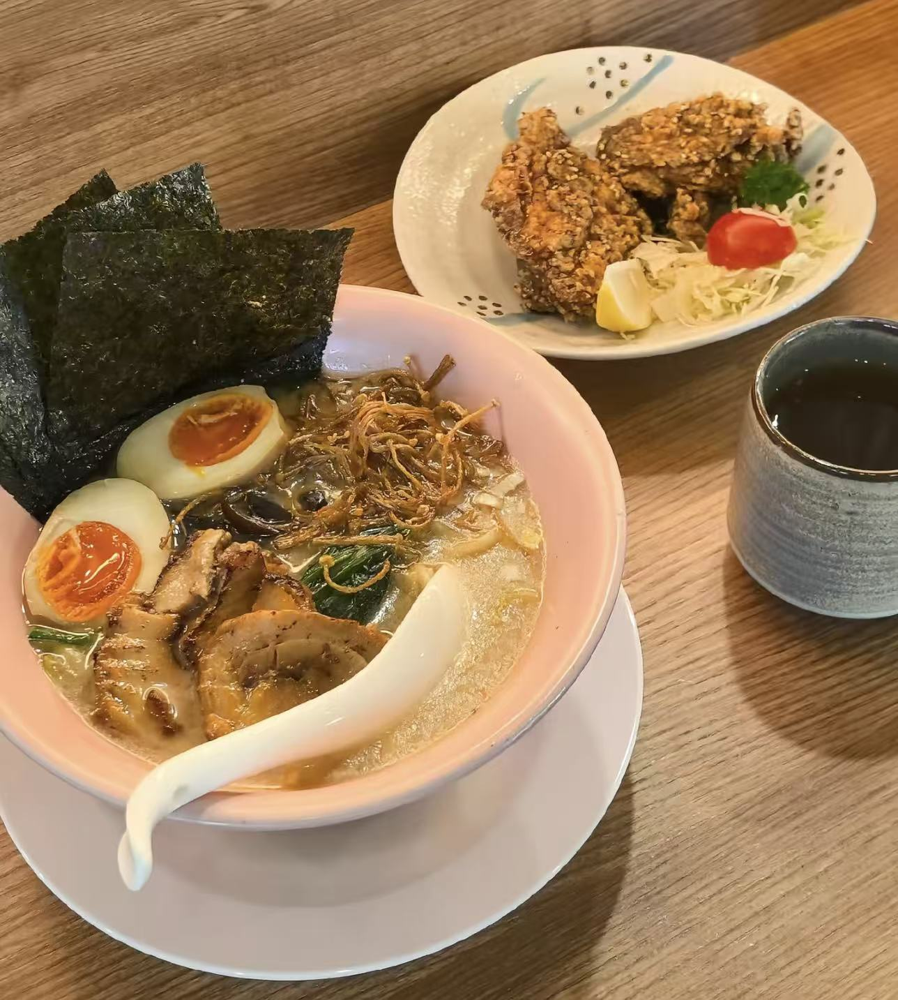

Crispy fish with sweet and sour sauce, a classic Shanghai delicacy.

Fresh hairy crab meat with hand-pulled noodles, a luxury local favorite.
Sweet and tender braised pork belly, the soul of Shanghai cuisine.

Golden crispy fried pork strips, a popular street food in Shanghai.

Steamed soup dumplings filled with pork and broth, the icon of Shanghai food.

Creamy tonkotsu ramen with chashu and soft-boiled egg, a local comfort food.